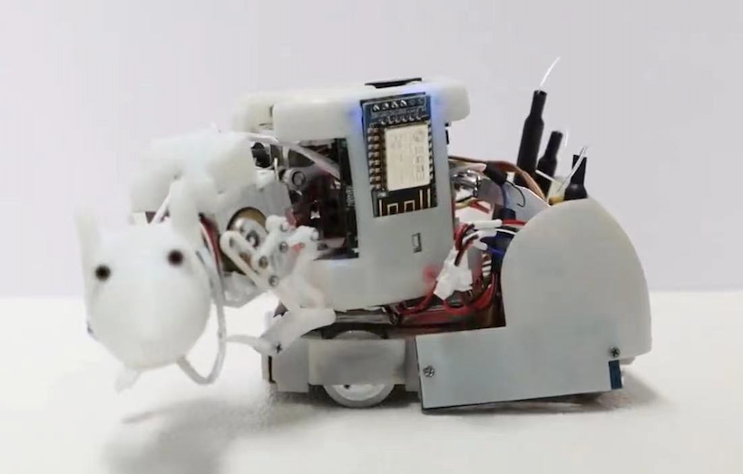

Research Projects
Development of a Small-Sized Quadruped Robotic Rat Capable of Multi- Modal Motions
 |
Abstract: Legged robots are very promising for use in real- world applications, but their operation in narrow spaces is still challenging. One solution for enhancing their environmental adapt- ability is to design a small-sized biomimetic robot capable of per- forming multiple motions. By capturing a decent representation of an actual rat (rattus norvegicus), we developed a small-sized quadruped robotic rat (SQuRo), which includes four limbs and one flexible spine. On the basis of the extracted key movement joints, SQuRo was subtly designed with a relatively elongated slim body (aspect ratio: 3.42) and smaller weight (220 g) compared with quadruped robots of the same scale. Accordingly, we propose a control framework for multimodal motion planning, and the appropriate control parameters were tuned through optimization with consideration to the stability and actuation limits. The re- sults obtained through a series of experimental tests reveal that SQuRo achieves a superior motion performance compared with ex- isting state-of-the-art small-sized quadruped robots. Remarkably, SQuRo has an extremely small turning radius (0.48 BL) and strong payload capacity (200 g), and it can recover from falls. |
Bi-DexHands: Bimanual Dexterous Manipulation via Reinforcement Learning
 |
Abstract: Bi-DexHands provides a collection of bimanual dexterous manipulations tasks and reinforcement learning algorithms. Reaching human-level sophistication of hand dexterity and bimanual coordination remains an open challenge for modern robotics researchers. To better help the community study this problem, Bi-DexHands are developed with the following key features: Isaac Efficiency, RL/MARL Benchmark, Heterogeneous-agents Cooperation, Task Generalization, Task Generalization. |
A RL-based Policy Optimization Method Guided by Adaptive Stability Certification
 |
Abstract: In contrast to the control-theoretic methods, the lack of stability guarantee remains a significant problem for model-free reinforcement learning (RL) methods. Jointly learning a policy and a Lyapunov function has recently become a promising approach to ensuring the whole system with a stability guarantee. However, the classical Lyapunov constraints researchers introduced cannot stabilize the system during the sampling-based optimization. Therefore, we propose the Adaptive Stability Certification (ASC), making the system reach sampling-based stability. Because the ASC condition can search for the optimal policy heuristically, we design the Adaptive Lyapunov-based Actor-Critic (ALAC) algorithm based on the ASC condition. Meanwhile, our algorithm avoids the optimization problem that a variety of constraints are coupled into the objective in current approaches. When evaluated on ten robotic tasks, our method achieves lower accumulated cost and fewer stability constraint violations than previous studies. |
Collision-Free Trajectory Planning for a 6-DoF Free Floating Space Robot via Hierarchical Decoupling Optimization
Abstract:Collision-free trajectory planning is a critical technique for space robot mission. In this letter, we developed a model-free Hierarchical Decoupling Optimization (HDO) algorithm to realize 6D-pose multi-target trajectory planning for the free-floating space robot. In order to reduce the complexity of exploration, the whole system consists of two layers: the high-level policy completes the collision-free trajectory planning of the end-effector’s pose; the low-level policy divides the task of reaching arbitrary pose into two decoupling sub-tasks (position and orien- tation) within a large target space. By introducing the Hindsight Experience Replay (HER), we successfully trained two agents based on multi-goal reinforcement learning. We proposed an Event-based Alternating Optimization (EAO) to stabilize the training and efficiently approximate the optimal policy. Theoretical analysis shows EAO can guarantee the learning stability and reachability of the equilibrium point. The simulation results illustrate that the proposed algorithm achieves high environmental adaptability and anti-disturbance capacity. Furthermore, we demonstrated our pro- posed method in a practical space mission by applying it to capture a target satellite. |
Design and Control of a Miniature Quadruped Rat-inspired Robot
Abstract: Robot-rat interaction test is a promising way to characterize the animal sociality for biomedical application. However, currently developed robotic rats are mostly driven by wheels, resulting in limited movement agility. It is an arduous task to realize both the morphology and functionality of rat limbs within restricted dimension. In this specified scale, it is not only difficult to design efficient mechanism to achieve high-speed movement but also difficult to integrate many actuated joints to accomplish multiple motion modes. To address these problems, we modularly designed a miniature quadruped robot making full use of connecting rod mechanism to mimic rat limbs. To generate bio-inspired quadruped gait by using a compact control board, we developed a locomotion controller based on central pattern generators (CPG). Together with particle swarm optimization (PSO) algorithm, the stride frequency and length can be adjusted by parameters. Both simulation and experimental tests show that our quadruped rat-inspired robot is able to implement three motion modes. 1) Crouch-standing action: the robotic rat is able to stand up from initial state (kneeling action) without manual support. 2) Forward walking: the robot reaches a maximum speed of 10cm/s. 3) Turning action: the robotic rat has a small turning radius of 12 cm that is only half of its body length. The outperformance of this robotic rat show high promises in performing natural robot-rat interaction in future. |
A Multi-Target Trajectory Planning Strategy of a 6-DoF Free-Floating Space Robot based on Reinforcement Learning
Abstract: Space robots have played an essential role in space junk removal. Compared with traditional model-based meth- ods, model-free reinforcement learning methods are promising in tackling space capture missions, which is challenging due to the dynamic singular problem and measuring errors of dynam- ics parameters. Nevertheless, current research mostly focus on the single-target environment. In this paper, we propose a multi- target trajectory planning strategy of a 6-DoF free-floating space robot optimized by the Proximal Policy Optimization (PPO) algorithm. Furthermore, we adopt some augmentation techniques to improve the PPO algorithm on precision and stability of reaching multiple targets. In particular, we introduce an Action Ensembles Based on Poisson Distribution (AEP) method, which facilitates the policy to efficiently approximate the optimal policy. Our method can be easily extended to realize the task that the end-effector tracks a specific trajectory. We evaluate our approach on four tasks: circle trajectory tracking, external disturbances at joints, different masses of the base, and even single joint failure, without any further fine-tuning. The results suggest that the planning strategy has comparably high adaptability and anti-inference capacity. |
An End-to-End Trajectory Planning Strategy for Free-floating Space Robots
Abstract: The traditional trajectory planning methods of free-floating space robots have the dynamic singular problem and the difficulty of accurate modeling. Although learning-based approaches have achieved remarkable performance on such task, they mainly focus on single modular design such as the perception, planning, or control part. Optimization-based end-to-end method can well combine perception, planning and control, which not rely on parameters of the dynamic model and reduce the difficulty of manually adjusting modular controllers’ parameters. Therefore, we developed an end-to-end trajectory planning strategy based on optimization with multiple constraints. The whole strategy consists of several multi-layer neural networks and is optimized by a deep reinforcement learning algorithm based on maximum entropy. The results of visualization show that our strategy can capture the information of robotic arm from vision directly. Moreover, we evaluate the kinematic and dynamic features of the system and testify our strategy in anti-interference experiments. The performance of our strategy demonstrates the availability and robustness of the system. |
Design of a Compact Rat-inspired Waist Mechanism for a Biomimetic Robot
|  | Abstract: In this paper, we designed a new bio-inspired compact waist mechanism for a robotic rat to allow a better imitation of rat movement. With the observation and analysis of animal movement recordings, we found that the dorsal spine of a rat played an important role in agile pitch and yaw movements. To mimic such agile movements, we designed a new waist mechanism inspired by the muscle-tendon actuation pattern of rat spine. The proposed mechanism consists of two sets of parallel placed linkages for driving pitch and yaw movement, respectively. Although actuated by only one DC motor, each set of the linkages was able to output 2-DOF movement. Consequently, the agile pitch and yaw movements were achieved in a compact space with this new rat-inspired mechanism. Compared with previously designed waist, the new one enables a wider range of movement. Remarkably, the volume and weight were decreased 50% and 67% respectively. Additionally, it similar to a rat's waist in terms of both dimension and actuation pattern. |
An Effective Rain Prediction Method based on Seq2Seq Model with Attention Mechanism
Abstract: 1) Designed a rain prediction method based on Seq2Seq model with attention mechanism; 2)Designed other machine learning methods to predict the volume of rain, such as SVR, MLP, LSTM and XGBoost; 3)Evaluated our method on the testing dataset and visualized the attention map to illustrate the different importance of various factors. |
Real-Time Mask Face Detection On the CPU Platform
Abstract: 1) Designed two fast mask face detection methods based on the MobileNetV2-SSD model and the YOLOv3-tiny model; 2) Evaluated two methods on accuracy and detecting speed, and studied the effects of network super parameters, data enhancement, optimizer, number of anchor boxes, NMS type and picture size on the performance of the model; 3)Considering the robustness of algorithm, we introduced some noises on images to enhance data and achieve the accuracy-robustness balance. |
A Two-wheel Robot with Adjustable Wheelbase Used for Pipeline Detection
Abstract: 1) Designed a two-wheel robot, and implemented a method of changing the wheelbase based on rack and pinion mechanism; 2) Developed a control system based on WiFi communication, integrated the function of remote image transmission, and testified some experiments in narrow pipelines. |
A Passively-Stable Four-legged Robot Capable of Leaping Obstacle
 |
Abstract: 1) Designed a special foot structure, which is composed of three semicircular arcs of carbon fiber; 2) Designed an ejection mechanism based on spring energy storage, in which the energy of spring is stored by rack and pinion mechanism; 3) Developed a control system using WiFi communication, integrated PID control based on position tracking, and realized the modes including walking, turning and leaping obstacle. |